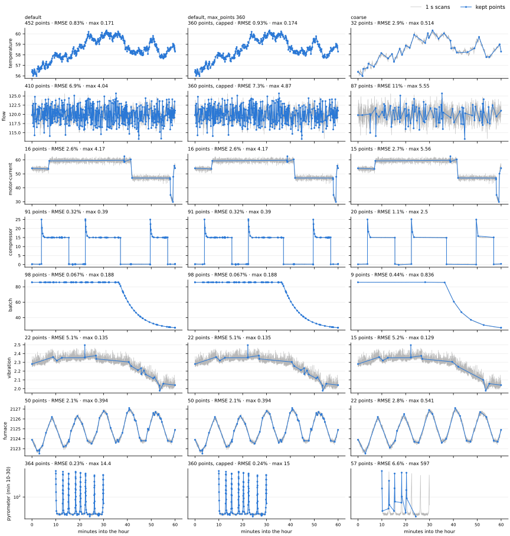
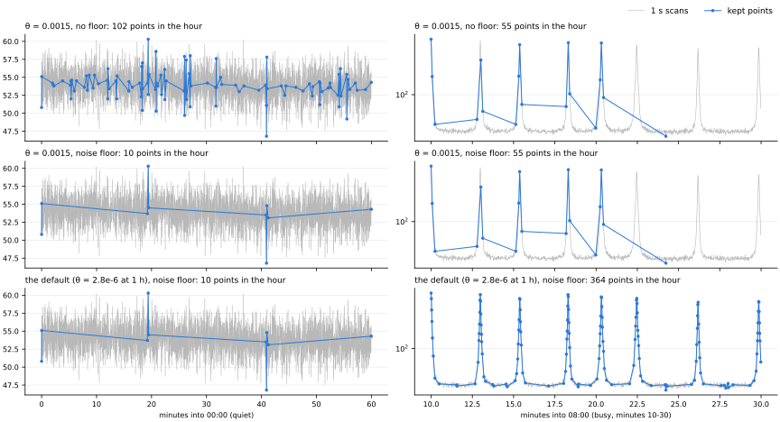
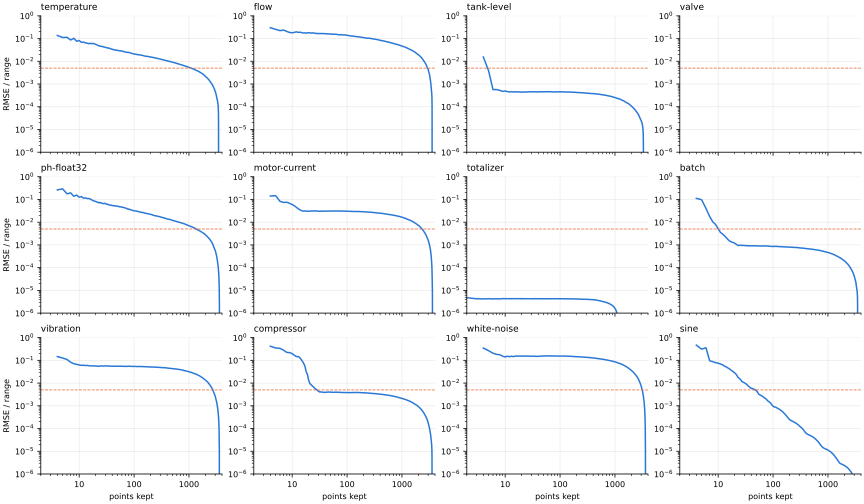
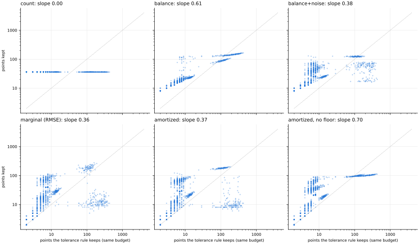
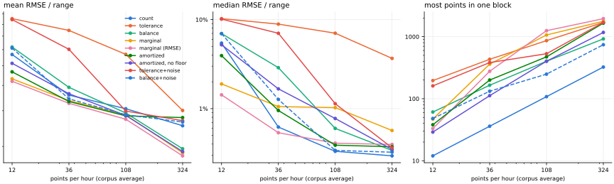
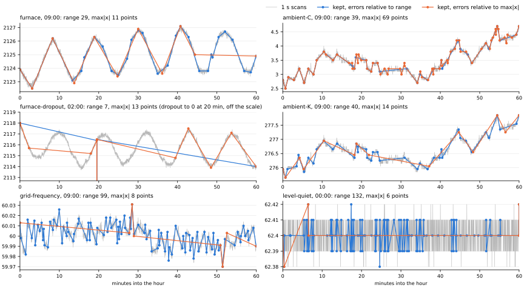

fluxprune selects a subset of points from a time series to be read back as piecewise-linear segments. It always keeps the first and last points (so adjacent blocks stitch cleanly) along with the minimum and maximum, then adds whichever points reduce the time-weighted RMSE most until another point no longer buys enough improvement. Calling prune(times, values) works out of the box with its defaults, and three parameters control what gets kept:
error_per_point (θ) sets the exchange rate between error and point count—choose it first by dividing the relative RMSE you would accept at some reference point count by that count. The default is 0.1% of the block range at a tenth of the input points.max_points enforces a hard upper limit on the number of kept points.max_error bounds the worst single-scan error in the signal's own units, adding points wherever needed.The first two sections show how these settings behave across signals; the rest of the report walks through the algorithm and the experiments behind each design choice.
Dataset: 19 synthetic signals × 5 days of 1 s scans split into 1 h blocks of 3,600 points (tslab/prune/signals.py; the ranking and stopping-rule studies use the first 12 signals). Relative errors are normalized by each block's range (max − min). Regenerate with uv run python make_prune_report.py in experimental/.
error_per_point (θ) acts as an exchange rate between error and point count. Prune adds points in order of how much they reduce the time-weighted RMSE and stops once an additional point no longer saves θ of that RMSE (measured relative to the block's range and above its white-noise floor; see the noise floor). Pick θ first by taking the RMSE you would accept at some reference point count and dividing by that count, so θ = Y / X reads as "Y error at X points." Note that X is not a fixed target: simpler blocks stop earlier, while busier blocks keep more points at a higher error. The default is 0.1% of the range at a tenth of the input length, θ = 0.001 / (n / 10), which is 2.8·10⁻⁶ for an hour of 1 s scans. Adding max_points puts a hard ceiling on top by dropping the least significant points from the RMSE pass. We compare three settings below:
The figure shows one hour of eight signals (day 0 at 09:00, and minutes 10–30 of the pyrometer's busiest hour). Each panel reports the number of points kept in the hour, whether the cap bound, the RMSE as a percentage of the hour's range, and the worst single-scan error in the signal's units.

The table covers all 19 signals (described below) across 1 h blocks over all 5 days, listing mean points per hour (with the worst block's max), the fraction of blocks where the cap bound, and underneath, the mean RMSE over the block's range and the largest error across any block in signal units. The default keeps an average of 162 points per hour (median 77), and 22% of blocks want more than 360 points—mostly noisy or fast-moving signals that the cap holds to 360 at the cost of higher RMSE. The coarse θ averages 24 points per hour and lets RMSE climb to several percent on busy signals, which mainly shows up in the worst-case error (bounded by max_error).
| signal | default | default, max_points 360 | coarse |
|---|---|---|---|
| temperature | 452 (max 568) 0.9% · 0.236 | 360 (max 360) · capped 100% 1% · 0.255 | 33 (max 48) 3.2% · 0.797 |
| flow | 419 (max 484) 5.7% · 5.16 | 360 (max 360) · capped 99% 6.1% · 5.17 | 76 (max 97) 9.4% · 9.84 |
| tank-level | 61 (max 140) 0.035% · 0.12 | 61 (max 140) 0.035% · 0.12 | 5 (max 7) 0.077% · 1.52 |
| valve | 6 (max 17) 3.4e-14% · 6.88e-13 | 6 (max 17) 3.4e-14% · 6.88e-13 | 5 (max 12) 0.079% · 7.4 |
| ph-float32 | 518 (max 567) 0.85% · 0.043 | 360 (max 360) · capped 100% 1% · 0.0544 | 36 (max 47) 3.4% · 0.167 |
| motor-current | 22 (max 172) 8% · 6.53 | 22 (max 172) 8% · 6.53 | 12 (max 32) 8.1% · 6.71 |
| totalizer | 5 (max 66) 0.001% · 0.124 | 5 (max 66) 0.001% · 0.124 | 2 (max 4) 0.0061% · 35.7 |
| batch | 67 (max 160) 0.088% · 0.3 | 67 (max 160) 0.088% · 0.3 | 8 (max 11) 0.43% · 1.89 |
| vibration | 78 (max 216) 5.5% · 0.189 | 78 (max 216) 5.5% · 0.189 | 19 (max 34) 5.9% · 0.654 |
| compressor | 67 (max 194) 0.34% · 0.752 | 67 (max 194) 0.34% · 0.752 | 19 (max 23) 1.5% · 16.8 |
| white-noise | 18 (max 171) 12% · 6.43 | 18 (max 171) 12% · 6.43 | 12 (max 47) 12% · 6.43 |
| sine | 164 (max 164) 0.035% · 0.00163 | 164 (max 164) 0.035% · 0.00163 | 22 (max 22) 1.6% · 0.0829 |
| furnace | 51 (max 76) 2.6% · 0.572 | 51 (max 76) 2.6% · 0.572 | 21 (max 30) 3.2% · 0.957 |
| furnace-dropout | 45 (max 76) 2.1% · 0.702 | 45 (max 76) 2.1% · 0.702 | 18 (max 30) 2.6% · 6.62 |
| grid-frequency | 584 (max 635) 1.8% · 0.00661 | 360 (max 360) · capped 100% 2.4% · 0.00967 | 60 (max 73) 6.1% · 0.0379 |
| ambient-C | 83 (max 103) 2.3% · 0.3 | 83 (max 103) 2.3% · 0.3 | 27 (max 38) 3.4% · 0.414 |
| ambient-K | 83 (max 102) 2.3% · 0.3 | 83 (max 102) 2.3% · 0.3 | 27 (max 38) 3.4% · 0.488 |
| level-quiet | 107 (max 335) 9.1% · 0.0352 | 107 (max 335) 9.1% · 0.0352 | 20 (max 73) 9.4% · 0.119 |
| pyrometer | 190 (max 364) 2.7% · 28 | 190 (max 360) · capped 1% 2.7% · 28 | 34 (max 57) 6.1% · 810 |
| all | 162 (median 77) · capped 0% 3% (median 1.1%) | 134 (median 77) · capped 22% 3.1% (median 1.2%) | 24 (median 21) · capped 0% 4.3% (median 3.2%) |
Below is the pyrometer scored against its underlying noise-free curve: points per hour in busy hours (with spikes) and quiet hours, points landing on spikes per hour, mean and worst peak shortfall (°C), and RMSE against the true curve (°C). Because time-weighted RMSE dilutes brief spikes (a 4 s spike of 600 °C adds only about 30 °C to an hour's RMSE), the coarse θ clips their peaks, whereas the default preserves them.
| setting | points/h, busy | points/h, quiet | on spikes/h | peak miss | worst | RMSE, busy | RMSE, quiet |
|---|---|---|---|---|---|---|---|
| default | 236 | 22 | 145 | 1.7 | 7 | 1.6 | 0.60 |
| default, max_points 360 | 236 | 22 | 145 | 1.7 | 7 | 1.6 | 0.60 |
| coarse | 41 | 11 | 29 | 239.5 | 809 | 39.5 | 0.56 |
max_error puts an upper bound on how far any scan can deviate from the reconstructed line, in the signal's own units. It only adds points: after the RMSE pass finishes, any segment that strays beyond the bound is split (see the max_error pass). This catches features that RMSE averages away, such as narrow spikes, glitches, or quiet blocks whose range is just dither. Set it relative to the sensor's noise σ (estimated by Pruned.noise), because lines through noisy scans cannot stay within a few σ without retaining most of the data. On white noise at θ = 0.0014, max_error = 1σ keeps 1681, 2σ keeps 381, 3σ keeps 34, 5σ keeps 12 points per hour out of 3,600, and prune emits a warning if max_error is set below σ. When combined with max_points, the budget goes to max_error first and the RMSE pass uses whatever remains; if max_error cannot be met within the cap, it relaxes to roughly the tightest bound the cap permits (setting max_error_met to false). Below we test four settings on top of the coarse θ using per-signal tolerances (shown in the σ, loose, and fine columns):

Results across all signals and 1 h blocks for all days, using the same layout as above; σ is the median noise estimate (0 where the signal has no noise or no regular cadence). A loose max_error only adds points where the coarse approximation missed real features, such as pyrometer spikes, furnace dropouts, and grid frequency swings. A fine bound around 2σ gets expensive on noisy signals, spending hundreds of points per hour mostly tracing noise (temperature averages 511, white noise 381, and the pyrometer's quiet hours jump from around ten points to over a hundred). The 360-point cap reins them in by relaxing the bound—in the worst block, from 1.05× the target (white-noise) up to 1.42× (grid-frequency). At 3σ or above, those same signals need far fewer points.
| signal | σ | loose | fine | coarse | coarse, loose max_error | coarse, fine max_error | coarse, fine max_error, max_points 360 |
|---|---|---|---|---|---|---|---|
| temperature | 0.042 | 0.5 | 0.1 | 33 (max 48) 3.2% · 0.797 | 34 (max 48) 3.2% · 0.5 | 511 (max 570) 1.1% · 0.1 | 358 (max 360) · capped 100% 1.3% · 0.12 |
| flow | 1 | 5 | 2 | 76 (max 97) 9.4% · 9.84 | 82 (max 102) 9.5% · 5 | 686 (max 740) 5.8% · 2 | 358 (max 360) · capped 100% 7.7% · 2.71 |
| tank-level | 0.018 | 1 | 0.1 | 5 (max 7) 0.077% · 1.52 | 5 (max 8) 0.075% · 0.997 | 7 (max 13) 0.052% · 0.1 | 7 (max 13) 0.052% · 0.1 |
| valve | 0 | 2 | 0.5 | 5 (max 12) 0.079% · 7.4 | 5 (max 15) 0.07% · 1.98 | 6 (max 18) 9.6e-05% · 0.5 | 6 (max 18) 9.6e-05% · 0.5 |
| ph-float32 | 0.0078 | 0.1 | 0.02 | 36 (max 47) 3.4% · 0.167 | 38 (max 48) 3.4% · 0.1 | 513 (max 550) 1.1% · 0.02 | 359 (max 360) · capped 100% 1.3% · 0.0252 |
| motor-current | 1 | 5 | 2 | 12 (max 32) 8.1% · 6.71 | 12 (max 32) 8.1% · 5 | 381 (max 446) 7.9% · 2 | 355 (max 360) · capped 79% 8% · 2.11 |
| totalizer | 1e-11 | 5 | 1 | 2 (max 4) 0.0061% · 35.7 | 3 (max 4) 0.0032% · 5 | 3 (max 4) 0.0015% · 0.994 | 3 (max 4) 0.0015% · 0.994 |
| batch | 0.048 | 1 | 0.1 | 8 (max 11) 0.43% · 1.89 | 9 (max 13) 0.42% · 0.999 | 391 (max 458) 0.088% · 0.1 | 355 (max 360) · capped 88% 0.089% · 0.105 |
| vibration | 0.029 | 0.2 | 0.06 | 19 (max 34) 5.9% · 0.654 | 19 (max 34) 5.9% · 0.199 | 369 (max 440) 5.6% · 0.06 | 351 (max 360) · capped 60% 5.7% · 0.0635 |
| compressor | 0.1 | 2 | 0.25 | 19 (max 23) 1.5% · 16.8 | 21 (max 27) 1.3% · 2 | 148 (max 188) 0.37% · 0.25 | 148 (max 188) 0.37% · 0.25 |
| white-noise | 1 | 5 | 2 | 12 (max 47) 12% · 6.43 | 12 (max 47) 12% · 4.99 | 381 (max 459) 12% · 2 | 355 (max 360) · capped 78% 12% · 2.1 |
| sine | 1.2e-05 | 0.05 | 0.005 | 22 (max 22) 1.6% · 0.0829 | 29 (max 31) 1.5% · 0.05 | 82 (max 84) 0.16% · 0.005 | 82 (max 84) 0.16% · 0.005 |
| furnace | 0.12 | 1 | 0.25 | 21 (max 30) 3.2% · 0.957 | 21 (max 30) 3.2% · 0.957 | 213 (max 264) 2.6% · 0.25 | 213 (max 264) 2.6% · 0.25 |
| furnace-dropout | 0.12 | 1 | 0.25 | 18 (max 30) 2.6% · 6.62 | 20 (max 30) 2.6% · 1 | 211 (max 264) 2.1% · 0.25 | 211 (max 264) 2.1% · 0.25 |
| grid-frequency | 0.0012 | 0.01 | 0.003 | 60 (max 73) 6.1% · 0.0379 | 82 (max 96) 5.9% · 0.01 | 640 (max 685) 2.1% · 0.003 | 355 (max 360) · capped 100% 3.1% · 0.00425 |
| ambient-C | 0.061 | 0.5 | 0.15 | 27 (max 38) 3.4% · 0.414 | 27 (max 38) 3.4% · 0.414 | 105 (max 129) 2.7% · 0.15 | 105 (max 129) 2.7% · 0.15 |
| ambient-K | 0.061 | 0.5 | 0.15 | 27 (max 38) 3.4% · 0.488 | 27 (max 38) 3.4% · 0.488 | 105 (max 131) 2.7% · 0.15 | 105 (max 131) 2.7% · 0.15 |
| level-quiet | 0.0061 | 0.05 | 0.015 | 20 (max 73) 9.4% · 0.119 | 20 (max 73) 9.4% · 0.0496 | 197 (max 275) 9.1% · 0.015 | 197 (max 275) 9.1% · 0.015 |
| pyrometer | 2.1 | 50 | 5 | 34 (max 57) 6.1% · 810 | 85 (max 159) 4.4% · 50 | 300 (max 486) 2.9% · 5 | 270 (max 360) · capped 47% 3% · 7 |
| all | 24 (median 21) · capped 0% 4.3% (median 3.2%) | 30 (median 22) · capped 0% 4.2% (median 3.1%) | 282 (median 223) · capped 0% 3.1% (median 1.3%) | 226 (median 223) · capped 40% 3.3% (median 1.6%) |
Pyrometer metrics for the same four settings:
| setting | points/h, busy | points/h, quiet | on spikes/h | peak miss | worst | RMSE, busy | RMSE, quiet |
|---|---|---|---|---|---|---|---|
| coarse | 41 | 11 | 29 | 239.5 | 809 | 39.5 | 0.56 |
| coarse, loose max_error | 105 | 11 | 79 | 1.7 | 7 | 19.8 | 0.56 |
| coarse, fine max_error | 350 | 119 | 185 | 1.7 | 7 | 1.5 | 1.22 |
| coarse, fine max_error, max_points 360 | 311 | 119 | 174 | 1.7 | 7 | 1.6 | 1.22 |
The first eighteen signals form the main corpus for the ranking and stopping-rule studies. The next six test error scaling on small variations riding on large offsets, and the pyrometer tests the noise floor.
| signal | what it is |
|---|---|
| temperature | Daily cycle + slow drift (τ 30 min) + noise σ 0.03 °C, 0.01 °C resolution |
| flow | Setpoint steps (6/day) through a 60 s lag + process noise (σ 1.5, τ 5 s) + measurement noise σ 0.8, 0.1 resolution: noise above CompDev |
| tank-level | Fill and drain ramps (0.01–0.05 %/s) between holds + noise σ 0.02 %, 0.01 % resolution |
| valve | Position commands in 5 % steps (30/day), 2 %/s travel, no noise, 0.1 % resolution |
| ph-float32 | pH 7 + slow drift (τ 10 min) + noise σ 0.004, stored as float32 (not decimal) |
| motor-current | Load steps (24/day) through a 10 s lag + noise σ 1 A, 0.01 A resolution: CompDev far below the noise, so most scans are archived |
| totalizer | Flow totalizer: integral of a stepped flow, 0.1 resolution (piecewise straight) |
| batch | Batch reactor: heat ramp, soak, cool, ~2 h cycles + noise σ 0.05 |
| vibration | Vibration RMS: slow drift + rare bursts (seconds to minutes) + noise |
| compressor | Compressor power: on/off cycles (5-15 min) with start-up overshoot + noise |
| white-noise | White noise only, σ 1 |
| sine | One 20 min sine, nothing else (smooth: error falls as k⁻² with no floor) |
| furnace | Furnace temperature, °F: setpoints 2100-2130 with ramps, control cycling ±0.3-1.5 °F, 0.1 °F steps |
| furnace-dropout | The furnace with 6 thermocouple dropouts a day (reads 0 for 2-20 s) |
| grid-frequency | Grid frequency, Hz: 60 ± ~10 mHz, 4 generator trips a day (−40 to −150 mHz), 1 mHz steps |
| ambient-C | Outdoor temperature, °C: −3 to 9 over the day, weather drift, 0.1 °C steps (crosses zero) |
| ambient-K | The same ambient temperature in kelvin (+273.15) |
| level-quiet | Tank level, %: held at 62.4 (±1 step of 0.01 dither) but for 3 fill/draw cycles a day |
| pyrometer | Pyrometer at a furnace's exit conveyor, °C: a 45-55 floor with noise σ 2, and hot items passing every 1.5-5 min in production runs of 1-4 h with 0.5-3 h quiet between: spikes of 500-900 above the floor, a / (b + t²) with a half-width of 1.5-2.5 s, 0.1 °C steps |
Straight lines through noisy samples always leave roughly σ of residual error until nearly every point is kept. On a quiet, noisy block whose range is only a few σ, that noise looks like real signal relative to the range, so the RMSE pass keeps spending points just to trace it. With the noise floor enabled (the default), the stopping criterion uses √(e² − σ²) instead of e—an estimate of the error against the true signal beneath the noise. σ is estimated in a single O(n) pass by taking each scan's distance from the chord connecting its two neighbors, normalizing by √(1 + w² + (1 − w)²) (where w is its relative time position between them), and scaling the median by 1.4826 (fluxprune/_noise.py). No smoothing is applied and the point ranking stays unchanged; only the stopping point moves. The table shows, across 1 h blocks of all days, the median σ relative to block range, plus the points per hour (without → with the floor) and mean RMSE over range against the scans underneath, at both θ = 0.0015 (the old default) and the current default (θ = 0.001 / (n / 10), or 2.8e-6 for 3,600 scans).
| signal | σ / range | θ = 0.0015 | default |
|---|---|---|---|
| temperature | 1.1% | 32 → 32 3.2% → 3.3% | 1462 → 452 0.38% → 0.9% |
| flow | 7.9% | 84 → 72 9.2% → 9.5% | 2566 → 419 0.7% → 5.7% |
| tank-level | 0.033% | 5 → 5 0.082% → 0.082% | 151 → 61 0.033% → 0.035% |
| valve | 0% | 4 → 4 0.06% → 0.06% | 5 → 5 2.3e-14% → 2.3e-14% |
| ph-float32 | 0.97% | 35 → 35 3.5% → 3.5% | 1439 → 518 0.38% → 0.85% |
| motor-current | 9.4% | 67 → 12 7.6% → 8.1% | 2705 → 22 0.74% → 8% |
| totalizer | 2.2e-13% | 2 → 2 0.0054% → 0.0054% | 5 → 5 0.00083% → 0.00089% |
| batch | 0.093% | 8 → 8 0.45% → 0.45% | 327 → 67 0.074% → 0.088% |
| vibration | 8% | 47 → 18 5.6% → 6% | 2289 → 78 0.62% → 5.5% |
| compressor | 0.41% | 19 → 18 1.5% → 1.5% | 871 → 67 0.21% → 0.34% |
| white-noise | 14% | 95 → 11 11% → 12% | 2941 → 18 0.81% → 12% |
| sine | 0.00059% | 22 → 22 1.6% → 1.6% | 164 → 164 0.035% → 0.035% |
| furnace | 3.3% | 28 → 20 2.9% → 3.2% | 2017 → 51 0.54% → 2.6% |
| furnace-dropout | 3% | 24 → 18 2.3% → 2.6% | 1596 → 45 0.43% → 2.1% |
| grid-frequency | 2.2% | 58 → 57 6.2% → 6.2% | 1905 → 584 0.51% → 1.8% |
| ambient-C | 2.6% | 30 → 26 3.3% → 3.5% | 1706 → 83 0.45% → 2.3% |
| ambient-K | 2.6% | 30 → 26 3.2% → 3.5% | 1704 → 83 0.44% → 2.3% |
| level-quiet | 15% | 77 → 19 9.3% → 9.4% | 1869 → 107 0.5% → 9.1% |
| pyrometer | 0.25% | 51 → 33 6% → 6.2% | 1152 → 190 0.3% → 2.7% |
Any noise estimator assumes sample times are independent of sample values, which is false for historian archives where swinging door or a deadband retains points specifically because of their values. Even on a smooth tag, archived points pass white-noise tests just like raw scans and yield an apparent σ near CompDev. To prevent false triggers, the noise floor only runs when a block has a regular cadence—at least 90% of intervals equal to one scan, using fluxcode's fluxcode._noise.cadence check. The table evaluates the tags' swinging-door archives over 1 h blocks across all days, showing archived points/h, the share of blocks activating the floor, and default prune points/h and RMSE over range against the 1 s scans (with and without noise_floor) alongside the archive's own RMSE. Tank level and valve are omitted because they only archive 2–5 points per hour.
| tag | archived/h | blocks with a floor | default | noise_floor=False | the archive |
|---|---|---|---|---|---|
| temperature | 325 | 0% | 197 · 1.8% | 197 · 1.8% | 1.7% |
| flow | 1362 | 0% | 1215 · 4.6% | 1215 · 4.6% | 4.5% |
| ph-float32 | 340 | 0% | 213 · 1.9% | 213 · 1.9% | 1.8% |
| motor-current | 2957 | 0% | 2533 · 1.3% | 2533 · 1.3% | 0.71% |
Measuring against the underlying noise-free signal instead: on pure white noise (σ = 1 across 120 hours), the reconstructed lines average 0.27σ RMSE from zero with the floor versus 1.00σ without it, and 0.48σ versus 1.03σ in the worst hour (with very few points kept, lines anchored at the required minimum and maximum lean slightly further).
Points per hour on day 0 (without → with the floor) as θ decreases. Without the floor, tightening θ simply buys noise, so counts grow with the noise level. With the floor enabled, noise-dominated signals level off once their real structure is captured, and only signals with fine detail keep adding points.
| signal | θ = 0.0015 | θ = 0.00015 | θ = 1.5e-05 | θ = 1.5e-06 |
|---|---|---|---|---|
| temperature | 32 → 32 | 136 → 123 | 591 → 365 | 1841 → 456 |
| flow | 86 → 75 | 455 → 289 | 1584 → 414 | 2866 → 422 |
| motor-current | 74 → 11 | 518 → 13 | 1791 → 14 | 2986 → 14 |
| vibration | 48 → 17 | 345 → 45 | 1343 → 64 | 2529 → 73 |
| white-noise | 96 → 11 | 657 → 15 | 2070 → 17 | 3142 → 17 |
| sine | 22 → 22 | 42 → 42 | 91 → 91 | 191 → 191 |
| level-quiet | 72 → 22 | 465 → 87 | 1360 → 112 | 1866 → 142 |
| pyrometer | 55 → 32 | 251 → 71 | 749 → 132 | 1604 → 182 |
| mean of the 12 | 36 → 20 | 197 → 60 | 702 → 122 | 1449 → 164 |
This signal motivated the noise floor: a pyrometer on a furnace exit conveyor sits on a noisy baseline most of the time, punctuated by narrow spikes (a / (b + t²), roughly 10 s wide) as hot items pass—1,264 spikes across 5 days, separated by quiet hours between runs (pyrometer in tslab/prune/signals.py). Scored against its noise-free curve, the table lists points per hour in busy and quiet hours, points landing on spikes (more than 3σ above baseline), mean and worst peak shortfall (°C), and RMSE against the true curve (°C). The floor cuts quiet hours from tracing noise down to a handful of points. It does not change spike capture on its own, since time-weighted RMSE weights narrow spikes lightly (a 4 s spike of 600 °C adds only ~30 °C to an hour's RMSE); preserving spikes comes from using a tighter θ (like the default) or setting max_error to a few σ.
| setting | points/h, busy | points/h, quiet | on spikes/h | peak miss | worst | RMSE, busy | RMSE, quiet |
|---|---|---|---|---|---|---|---|
| θ = 0.0015, no floor | 39 | 94 | 28 | 253.1 | 809 | 40.7 | 0.66 |
| θ = 0.0015 | 39 | 11 | 28 | 253.2 | 809 | 40.7 | 0.56 |
| default (θ = 2.8e-6 at 1 h) | 236 | 22 | 145 | 1.7 | 7 | 1.6 | 0.60 |
| default, no floor | 660 | 2933 | 181 | 1.7 | 7 | 1.6 | 2.00 |
| θ = 0.0015, max_error = 20 | 162 | 11 | 120 | 1.7 | 7 | 8.2 | 0.56 |

These sections cover the studies behind the defaults: ranking quality, stopping rules, error scaling, max_error enforcement, refitting, archive inputs, and runtime. Several experiments use prototype rules from tslab/prune/rules.py.
Each method selects the same number of points per 1 h block (every 4th hour of day 0, giving 6 blocks per signal), and cells report the geometric mean of each method's RMSE relative to refined fluxprune. Both fluxprune and top-down include the required endpoints and extrema within k. For swinging door, CompDev is binary-searched to land at or just above k points. LTTB and min/max buckets are standard plotting downsamplers, while Visvalingam-Whyatt (cartographic line simplification) removes points bottom-up by triangle area; + refine applies fluxprune's two refinement passes to its output.
| method | temperature | flow | tank-level | valve | ph-float32 | motor-current | totalizer | batch | vibration | compressor | white-noise | sine | all (RMSE) | all (max error) |
|---|---|---|---|---|---|---|---|---|---|---|---|---|---|---|
| fluxprune | 1.00 | 1.00 | 1.00 | exact | 1.00 | 1.00 | 1.00 | 1.00 | 1.00 | 1.00 | 1.00 | 1.00 | 1.00 | 1.00 |
| bottom-up (nested) | 1.36 | 1.33 | 1.16 | exact | 1.33 | 1.29 | 1.36 | 1.29 | 1.11 | 1.11 | 1.11 | 1.23 | 1.24 | 1.14 |
| top-down | 1.24 | 0.98 | 1.23 | exact | 1.33 | 1.30 | 0.97 | 2.11 | 1.06 | 1.49 | 1.05 | 2.87 | 1.35 | 1.21 |
| Visvalingam-Whyatt | 1.64 | 1.87 | 1.80 | exact | 1.53 | 2.22 | 1.63 | 1.46 | 1.74 | 1.44 | 2.23 | 1.11 | 1.67 | 1.39 |
| Visvalingam-Whyatt + refine | 1.04 | 1.09 | 1.04 | exact | 1.08 | 1.27 | 0.98 | 0.96 | 1.08 | 1.06 | 1.21 | 0.99 | 1.07 | 1.08 |
| swinging door | 1.78 | 1.60 | 1.37 | exact | 1.76 | 1.47 | 1.21 | 1.48 | 1.42 | 1.50 | 1.24 | 1.42 | 1.47 | 1.05 |
| LTTB | 1.72 | 1.93 | 2.28 | ∞ | 1.68 | 2.60 | 1.58 | 2.77 | 2.42 | 2.79 | 2.38 | 1.18 | 2.06 | 1.53 |
| min/max buckets | 1.83 | 2.38 | 32.05 | ∞ | 1.88 | 3.51 | 6.67 | 17.23 | 2.59 | 2.31 | 3.01 | 1.43 | 3.81 | 2.67 |
| uniform | 1.63 | 1.25 | 22.94 | ∞ | 1.61 | 1.91 | 5.47 | 7.58 | 1.36 | 1.75 | 1.47 | 1.68 | 2.56 | 2.35 |
| method | temperature | flow | tank-level | valve | ph-float32 | motor-current | totalizer | batch | vibration | compressor | white-noise | sine | all (RMSE) | all (max error) |
|---|---|---|---|---|---|---|---|---|---|---|---|---|---|---|
| fluxprune | 1.00 | 1.00 | 1.00 | exact | 1.00 | 1.00 | 1.00 | 1.00 | 1.00 | 1.00 | 1.00 | 1.00 | 1.00 | 1.00 |
| bottom-up (nested) | 1.31 | 1.30 | 1.22 | exact | 1.32 | 1.22 | 1.29 | 1.22 | 1.15 | 1.14 | 1.23 | 1.21 | 1.24 | 1.24 |
| top-down | 1.39 | 1.04 | 0.99 | exact | 1.45 | 1.03 | 0.95 | 1.11 | 1.02 | 31.75 | 1.00 | 1.78 | 1.57 | 1.55 |
| Visvalingam-Whyatt | 1.57 | 1.68 | 1.86 | exact | 1.59 | 1.98 | 1.54 | 1.82 | 1.63 | 2.25 | 1.91 | 1.65 | 1.76 | 1.59 |
| Visvalingam-Whyatt + refine | 1.02 | 1.02 | 1.01 | exact | 1.03 | 1.04 | 0.98 | 1.08 | 1.00 | 1.37 | 1.01 | 1.03 | 1.05 | 1.14 |
| swinging door | 1.68 | 1.50 | 1.28 | exact | 1.74 | 1.28 | 1.08 | 1.53 | 1.35 | 1.28 | 1.27 | 1.27 | 1.38 | 1.13 |
| LTTB | 1.88 | 1.89 | 2.09 | ∞ | 1.80 | 2.23 | 1.46 | 2.37 | 2.38 | 34.82 | 2.07 | 1.30 | 2.51 | 2.22 |
| min/max buckets | 1.93 | 2.26 | 8.20 | ∞ | 1.89 | 2.82 | 3.07 | 8.30 | 2.54 | 40.64 | 2.59 | 4.72 | 4.16 | 3.79 |
| uniform | 1.68 | 1.39 | 4.20 | ∞ | 1.75 | 1.56 | 2.00 | 4.61 | 1.40 | 36.50 | 1.40 | 1.55 | 2.54 | 2.90 |
| method | temperature | flow | tank-level | valve | ph-float32 | motor-current | totalizer | batch | vibration | compressor | white-noise | sine | all (RMSE) | all (max error) |
|---|---|---|---|---|---|---|---|---|---|---|---|---|---|---|
| fluxprune | 1.00 | 1.00 | 1.00 | exact | 1.00 | 1.00 | 1.00 | 1.00 | 1.00 | 1.00 | 1.00 | 1.00 | 1.00 | 1.00 |
| bottom-up (nested) | 1.32 | 1.31 | 1.27 | exact | 1.31 | 1.25 | 1.20 | 1.26 | 1.18 | 1.23 | 1.26 | 1.13 | 1.25 | 1.18 |
| top-down | 1.58 | 1.17 | 1.01 | exact | 1.46 | 1.01 | 0.93 | 1.01 | 1.02 | 14.22 | 1.01 | 1.16 | 1.42 | 1.50 |
| Visvalingam-Whyatt | 1.54 | 1.65 | 1.74 | exact | 1.54 | 1.75 | 1.44 | 1.70 | 1.56 | 1.72 | 1.75 | 1.30 | 1.60 | 1.47 |
| Visvalingam-Whyatt + refine | 1.03 | 1.05 | 1.02 | exact | 1.03 | 1.02 | 0.99 | 1.01 | 1.01 | 1.04 | 1.01 | 1.11 | 1.03 | 1.08 |
| swinging door | 1.63 | 1.43 | 1.27 | exact | 1.68 | 1.29 | 1.07 | 1.35 | 1.30 | 1.30 | 1.27 | 1.06 | 1.32 | 1.01 |
| LTTB | 1.83 | 1.84 | 1.87 | ∞ | 1.80 | 1.88 | 1.38 | 1.91 | 2.12 | 22.28 | 1.90 | 1.23 | 2.23 | 2.15 |
| min/max buckets | 1.89 | 2.13 | 2.39 | ∞ | 1.97 | 2.47 | 1.36 | 2.41 | 2.38 | 22.35 | 2.36 | 4.63 | 2.85 | 2.83 |
| uniform | 1.78 | 1.51 | 1.72 | ∞ | 1.80 | 1.51 | 1.64 | 1.61 | 1.42 | 24.83 | 1.49 | 1.28 | 2.02 | 2.32 |
On the same 3,600-point blocks, we compute the globally optimal k points (including the required ones) using O(n²k) dynamic programming—about 2 s per block, making it an oracle rather than a practical method. The table reports each greedy method's geometric-mean RMSE relative to that optimum.
| method | k = 12 | k = 36 | k = 108 |
|---|---|---|---|
| fluxprune | 1.05 (worst 1.25) | 1.04 (worst 1.38) | 1.06 (worst 1.40) |
| bottom-up (nested) | 1.30 (worst 1.63) | 1.29 (worst 1.60) | 1.32 (worst 1.53) |
| top-down | 1.41 (worst 4.08) | 1.64 (worst 66.18) | 1.50 (worst 74.09) |
These curves show what a stopping rule sees: relative RMSE versus points kept (from the initial ranking, before refinement) for one hour of each signal. Smooth signals decay as k⁻² (sine), random walks decay as k⁻½ (temperature, pH), and white noise barely drops until most points are kept; step and ramp signals drop sharply and then flatten onto their noise floor. The dashed line marks 0.5% for reference.

Each rule's single parameter is calibrated so that all 1,440 blocks average 36 points per hour (1% of the 1 s scans), except knee detection, which cannot be calibrated and keeps whatever its α produces. Each signal cell shows mean points per hour above the geometric-mean block RMSE. The summary columns on the right report overall mean points per block, mean and median block RMSE, and the largest single block.
| rule | what it does | parameter | temperature | flow | tank-level | valve | ph-float32 | motor-current | totalizer | batch | vibration | compressor | white-noise | sine | points/h | mean | median | max k |
|---|---|---|---|---|---|---|---|---|---|---|---|---|---|---|---|---|---|---|
| count | K points per hour | K = 36 | 36 3% | 36 9.7% | 36 0.033% | 36 2.3e-14% | 36 3.4% | 36 6.9% | 36 0.0004% | 36 0.085% | 36 3.7% | 36 0.36% | 36 11% | 36 0.61% | 36.0 | 3.6% | 0.62% | 36 |
| tolerance | fewest points within RMSE ε | ε = 0.131 | 7 9.2% | 92 9.8% | 4 2.6% | 4 4.7e-05% | 8 9.5% | 88 10% | 2 0.009% | 5 3.7% | 7 8.7% | 14 9.4% | 194 11% | 8 7.6% | 36.0 | 7.5% | 8.9% | 432 |
| balance | √(K·k_ε), K = the budget per hour: the geometric mean of the two | ε = 0.105 | 18 4.4% | 75 8.8% | 12 0.035% | 11 3.2e-14% | 19 5% | 71 6.8% | 8 0.00051% | 13 0.15% | 23 4% | 23 0.6% | 141 11% | 17 2.8% | 36.0 | 3.9% | 2.9% | 165 |
| marginal | minimise e² + λk | λ = 2.87e-05 | 45 2.6% | 216 6.9% | 5 0.072% | 4 2e-06% | 52 2.8% | 15 7% | 2 0.00093% | 8 0.43% | 21 4.3% | 21 0.71% | 15 12% | 27 1% | 36.0 | 3.4% | 1.1% | 361 |
| marginal (RMSE) | minimise e + λk: the least mean RMSE for the total | λ = 0.000203 | 71 2.1% | 140 7.7% | 6 0.05% | 5 6.5e-14% | 78 2.3% | 14 7.1% | 2 0.00069% | 14 0.13% | 21 3.9% | 28 0.41% | 13 12% | 39 0.52% | 36.0 | 3.3% | 0.54% | 277 |
| amortized | first k with √(e² − σ²) / (points added) < θ / hours, σ the block's noise (the default) | θ = 0.000454 | 65 2.2% | 161 7.3% | 5 0.054% | 4 7.5e-09% | 71 2.4% | 15 7.1% | 2 0.00073% | 11 0.22% | 33 3.9% | 21 0.69% | 14 12% | 29 0.95% | 36.0 | 3.3% | 0.95% | 200 |
| amortized, no floor | first k with e / (points added) < θ / hours | θ = 0.00145 | 33 3.1% | 86 8.5% | 5 0.064% | 4 2.1e-06% | 36 3.4% | 69 6.8% | 2 0.00093% | 8 0.41% | 49 4% | 19 1.5% | 99 11% | 22 1.6% | 36.0 | 3.6% | 1.7% | 112 |
| tolerance+noise | tolerance, ε raised to the noise σ | ε = 0.0968 | 10 7% | 223 7.6% | 4 1.8% | 4 2.2e-05% | 12 7.1% | 47 8.8% | 2 0.0047% | 5 2.7% | 24 7% | 15 6.2% | 78 11% | 8 7.4% | 36.0 | 6% | 7% | 383 |
| balance+noise | balance, ε raised to the noise σ | ε = 0.039 | 39 2.9% | 112 8% | 12 0.035% | 12 2.2e-14% | 43 3.1% | 49 6.8% | 9 0.00051% | 14 0.13% | 43 3.8% | 25 0.49% | 49 11% | 25 1.2% | 36.0 | 3.4% | 1.3% | 132 |
| knee | first k where 2k points don't improve e by 2^α (α = 0.25, not calibrated) | α = 0.25 | 3061 1.3e-12% | 8 12% | 8 0.039% | 5 2.3e-14% | 2882 1.3e-13% | 9 7.6% | 3 0.00063% | 19 0.094% | 11 4.5% | 28 0.44% | 8 13% | 3600 5.7e-18% | 803.4 | 3.7% | 0.083% | 3,600 |
Here each rule's per-block point count is plotted against the tolerance rule at the same total budget (the tolerance rule tracks complexity linearly by definition). A log-log fit gives the scaling slope: 0 corresponds to a fixed count, 1 to fixed tolerance, and 0.5 to their plain geometric mean. Fitted slopes: count 0.00, tolerance 1.00, balance 0.61, marginal 0.47, marginal (RMSE) 0.36, amortized 0.37, amortized, no floor 0.70, tolerance+noise 0.82, balance+noise 0.38.

Repeating the same calibration across four target averages, showing mean / median block RMSE above the maximum points kept in any single block.
| rule | 12/h | 36/h | 108/h | 324/h |
|---|---|---|---|---|
| count | 5.7% / 5.4% max k 12 | 3.6% / 0.62% max k 36 | 3.1% / 0.33% max k 108 | 2.5% / 0.3% max k 324 |
| tolerance | 8.5% / 10% max k 196 | 7.5% / 8.9% max k 432 | 5.7% / 7% max k 864 | 3% / 3.7% max k 1,700 |
| balance | 6.2% / 7% max k 61 | 3.9% / 2.9% max k 165 | 2.9% / 0.6% max k 402 | 1.9% / 0.34% max k 921 |
| marginal | 4.3% / 1.9% max k 47 | 3.4% / 1.1% max k 361 | 2.9% / 1% max k 1,066 | 1.9% / 0.57% max k 1,773 |
| marginal (RMSE) | 4.2% / 1.4% max k 33 | 3.3% / 0.54% max k 277 | 2.7% / 0.41% max k 1,250 | 1.8% / 0.4% max k 1,953 |
| amortized | 4.7% / 3.9% max k 38 | 3.3% / 0.95% max k 200 | 2.8% / 0.39% max k 473 | 2.8% / 0.37% max k 1,654 |
| amortized, no floor | 5.1% / 5.2% max k 29 | 3.6% / 1.7% max k 112 | 2.8% / 0.77% max k 402 | 1.9% / 0.35% max k 1,171 |
| tolerance+noise | 8.4% / 10% max k 161 | 6% / 7% max k 383 | 3% / 1.1% max k 531 | 2.7% / 0.36% max k 1,698 |
| balance+noise | 6.1% / 7% max k 48 | 3.4% / 1.3% max k 132 | 2.9% / 0.34% max k 249 | 2.6% / 0.32% max k 742 |

A rule that adapts to the underlying signal rather than its storage layout should keep roughly as many points when an hour is sampled every 10 s as when sampled every second (ratio near 1 whenever both rates capture the signal, though white noise cannot be captured), and roughly as many in one 12 h block as across twelve 1 h blocks (count and balance scale K proportionally with block duration). Below is the median ratio of k at 10 s to k at 1 s across day 0's hours:
| rule | temperature | flow | tank-level | valve | ph-float32 | motor-current | totalizer | batch | vibration | compressor | white-noise | sine |
|---|---|---|---|---|---|---|---|---|---|---|---|---|
| count | 1.00 | 1.00 | 1.00 | 1.00 | 1.00 | 1.00 | 1.00 | 1.00 | 1.00 | 1.00 | 1.00 | 1.00 |
| tolerance | 1.00 | 0.46 | 1.00 | 1.00 | 1.00 | 0.64 | 1.00 | 1.00 | 1.00 | 1.00 | 0.30 | 1.25 |
| balance | 1.00 | 0.62 | 1.00 | 1.00 | 1.00 | 0.42 | 1.00 | 0.96 | 1.00 | 1.00 | 0.39 | 1.18 |
| marginal | 0.94 | 0.78 | 1.00 | 1.00 | 0.98 | 13.20 | 1.00 | 1.00 | 4.66 | 0.98 | 17.17 | 0.89 |
| marginal (RMSE) | 1.18 | 1.62 | 1.00 | 1.00 | 1.07 | 23.85 | 1.00 | 1.00 | 9.30 | 0.91 | 25.25 | 1.10 |
| amortized | 0.69 | 0.14 | 1.00 | 1.00 | 0.66 | 1.34 | 1.00 | 1.00 | 0.85 | 0.96 | 1.41 | 1.00 |
| amortized, no floor | 0.94 | 0.82 | 1.00 | 1.00 | 0.94 | 0.83 | 1.00 | 0.95 | 0.91 | 0.98 | 0.80 | 0.91 |
| tolerance+noise | 1.00 | 0.10 | 1.00 | 1.00 | 1.00 | 0.38 | 1.00 | 1.00 | 1.00 | 1.00 | 0.22 | 1.22 |
| balance+noise | 0.91 | 0.25 | 1.00 | 1.00 | 0.88 | 0.50 | 1.00 | 1.00 | 0.69 | 1.00 | 0.46 | 0.96 |
| knee | 0.10 | 1.07 | 1.00 | 1.00 | 0.10 | 1.04 | 1.00 | 1.11 | 0.97 | 11.21 | 1.00 | 0.10 |
Ratio of k in a 12 h block to the sum of k across its twelve 1 h blocks (mean of the two 12 h halves on day 0):
| rule | temperature | flow | tank-level | valve | ph-float32 | motor-current | totalizer | batch | vibration | compressor | white-noise | sine |
|---|---|---|---|---|---|---|---|---|---|---|---|---|
| count | 1.00 | 1.00 | 1.00 | 1.00 | 1.00 | 1.00 | 1.00 | 1.00 | 1.00 | 1.00 | 1.00 | 1.00 |
| tolerance | 0.09 | 0.00 | 0.29 | 0.23 | 0.15 | 0.01 | 0.12 | 0.42 | 0.07 | 0.79 | 0.00 | 0.78 |
| balance | 0.31 | 0.06 | 0.56 | 0.54 | 0.47 | 0.06 | 0.36 | 0.68 | 0.14 | 0.91 | 0.75 | 0.93 |
| marginal | 0.10 | 0.01 | 0.43 | 0.45 | 0.18 | 0.17 | 0.17 | 0.44 | 0.05 | 0.73 | 0.09 | 0.67 |
| marginal (RMSE) | 0.07 | 0.01 | 0.40 | 0.46 | 0.12 | 0.19 | 0.23 | 0.38 | 0.12 | 0.64 | 0.09 | 0.62 |
| amortized | 0.51 | 0.33 | 0.43 | 0.49 | 0.67 | 0.21 | 0.24 | 0.68 | 0.21 | 0.84 | 0.06 | 0.91 |
| amortized, no floor | 0.47 | 0.26 | 0.44 | 0.51 | 0.63 | 0.28 | 0.25 | 0.59 | 0.08 | 0.83 | 0.83 | 0.92 |
| tolerance+noise | 0.10 | 0.00 | 0.30 | 0.27 | 0.26 | 0.01 | 0.11 | 0.45 | 0.02 | 0.82 | 0.48 | 0.90 |
| balance+noise | 0.36 | 0.22 | 0.63 | 0.64 | 0.54 | 0.15 | 0.35 | 0.68 | 0.11 | 0.92 | 0.56 | 0.97 |
| knee | 1.27 | 0.13 | 0.42 | 0.55 | 0.00 | 0.24 | 0.25 | 0.37 | 0.45 | 0.02 | 0.09 | 0.00 |
So far, errors have been normalized by each block's range, which keeps relative precision independent of units and DC offset: a furnace drifting 4 °F around 2,115 °F receives the same relative precision as a valve swinging from 0 to 100%. Alternatives include normalizing by the block's largest absolute value, the geometric mean of range and max|x|, or a known per-series span (modeled here as each signal's range across all days, similar to a historian's configured span—something a schema-free store does not have). The choice of scale does not affect the point ranking, only the stopping thresholds. To test this, we add six offset signals: furnace, furnace-dropout, grid-frequency, ambient-C, ambient-K, level-quiet.
Each rule-and-scale pair is calibrated to 36 points per hour across all 2,160 blocks of the 18 signals (5 days each). Cells report mean points per hour above the mean RMSE relative to each signal's full span, giving a unit- and block-independent error metric so the scales can be compared fairly (for the furnace with dropouts, error is measured on non-dropout samples). The final row shows the lowest possible mean RMSE over span at this budget, which requires knowing the span.
| rule | errors relative to | temperature | flow | tank-level | valve | ph-float32 | motor-current | totalizer | batch | vibration | compressor | white-noise | sine | furnace | furnace-dropout | grid-frequency | ambient-C | ambient-K | level-quiet | mean | worst signal | max k |
|---|---|---|---|---|---|---|---|---|---|---|---|---|---|---|---|---|---|---|---|---|---|---|
| tolerance | range | 7 2% | 79 1.9% | 4 3.3% | 4 1.4% | 8 5.1% | 63 3.7% | 2 0.05% | 5 4.7% | 7 1.3% | 13 9.8% | 127 8.6% | 8 7.6% | 10 1.2% | 9 32% | 22 3.6% | 6 1.4% | 6 1.4% | 270 0.56% | 5% | 32% | 469 |
| tolerance | √(range·max|x|) | 4 4% | 4 5% | 4 4.7% | 3 2.1% | 4 12% | 4 7.5% | 2 0.07% | 4 7.3% | 4 1.7% | 13 11% | 568 6.9% | 8 7.6% | 4 3.8% | 4 46% | 4 11% | 5 2% | 4 2.6% | 4 2% | 7.6% | 46% | 793 |
| tolerance | max|x| | 4 4% | 4 5.2% | 3 5.8% | 3 4.2% | 4 12% | 4 9.2% | 2 0.072% | 4 14% | 4 2.8% | 10 16% | 573 6.8% | 8 7.6% | 4 3.8% | 4 67% | 4 11% | 4 2.4% | 4 2.6% | 4 2.1% | 9.7% | 67% | 813 |
| tolerance | span (known) | 4 4% | 4 4.5% | 4 3.3% | 4 1.8% | 6 5.9% | 5 6.1% | 2 0.084% | 5 3.1% | 4 1.7% | 16 4.9% | 558 6.9% | 10 6.5% | 4 3.4% | 5 3.4% | 5 6.6% | 4 2.6% | 4 2.6% | 4 0.91% | 3.8% | 6.9% | 616 |
| balance | range | 18 0.93% | 74 1.5% | 12 0.022% | 11 0.00028% | 19 2.6% | 70 2.2% | 8 1.3e-05% | 13 0.13% | 22 0.31% | 23 0.6% | 138 8.4% | 17 2.8% | 19 0.4% | 18 0.56% | 36 2.6% | 16 0.6% | 16 0.6% | 115 0.027% | 1.4% | 8.4% | 175 |
| balance | √(range·max|x|) | 14 1.1% | 58 1.6% | 12 0.022% | 12 9.6e-15% | 17 2.8% | 78 2.2% | 8 1.3e-05% | 14 0.11% | 21 0.3% | 25 0.49% | 276 7.9% | 27 1.1% | 12 0.71% | 13 0.75% | 12 3.9% | 25 0.5% | 12 0.73% | 12 0.028% | 1.3% | 7.9% | 285 |
| balance | max|x| | 12 1.2% | 23 1.7% | 13 0.021% | 12 9.7e-15% | 14 3.1% | 49 2.2% | 8 1.3e-05% | 15 0.1% | 16 0.31% | 26 0.46% | 319 7.7% | 34 0.7% | 12 0.71% | 13 0.73% | 12 3.9% | 46 0.43% | 12 0.73% | 12 0.028% | 1.3% | 7.7% | 325 |
| balance | span (known) | 16 1% | 19 1.7% | 12 0.022% | 12 9.6e-15% | 34 1.8% | 82 2.2% | 8 1.3e-05% | 15 0.1% | 13 0.32% | 25 0.48% | 269 7.9% | 28 0.99% | 15 0.47% | 16 0.5% | 48 2.2% | 13 0.7% | 13 0.69% | 12 0.028% | 1.2% | 7.9% | 272 |
| amortized | range | 55 0.49% | 136 1.3% | 5 0.036% | 4 0.017% | 60 1.3% | 14 2.3% | 2 4.9e-05% | 10 0.21% | 28 0.31% | 21 0.76% | 13 9.2% | 26 1.1% | 29 0.32% | 25 1.1% | 100 1.5% | 41 0.4% | 41 0.4% | 37 0.032% | 1.2% | 9.2% | 169 |
| amortized | √(range·max|x|) | 59 0.47% | 176 1.2% | 6 0.029% | 5 0.0059% | 76 1.2% | 17 2.3% | 2 2.5e-05% | 13 0.11% | 39 0.29% | 27 0.43% | 17 9.2% | 51 0.33% | 16 0.42% | 14 0.95% | 29 2.7% | 64 0.34% | 26 0.47% | 10 0.031% | 1.1% | 9.2% | 214 |
| amortized | max|x| | 50 0.51% | 180 1.2% | 7 0.025% | 5 0.0015% | 74 1.2% | 19 2.3% | 3 2.5e-05% | 16 0.081% | 45 0.28% | 32 0.36% | 18 9.2% | 79 0.14% | 9 1.2% | 10 1.3% | 8 4.7% | 74 0.33% | 14 0.66% | 6 0.035% | 1.3% | 9.2% | 224 |
| amortized | span (known) | 52 0.5% | 109 1.4% | 6 0.031% | 5 0.0087% | 99 1% | 16 2.3% | 2 0.00053% | 13 0.11% | 15 0.31% | 27 0.43% | 17 9.2% | 45 0.43% | 23 0.34% | 23 0.39% | 126 1.3% | 32 0.43% | 32 0.43% | 6 0.034% | 1% | 9.2% | 147 |
| least mean RMSE | span (known) | 56 0.48% | 27 1.7% | 6 0.028% | 5 1e-14% | 113 0.95% | 14 2.3% | 2 9.7e-05% | 17 0.077% | 14 0.32% | 32 0.36% | 20 8.9% | 68 0.18% | 24 0.33% | 25 0.37% | 150 1.2% | 34 0.42% | 35 0.42% | 6 0.033% | 1% | 8.9% | 471 |

Block-length scaling across all days: ratio of k in a 12 h block to the sum of k across its twelve 1 h blocks, using θ / hours for the amortized rule. A ratio below 1 is partly expected because twelve separate blocks pay for twelve sets of required endpoints and extrema, and a longer block can allocate its points where they help most.
| rule | errors relative to | temperature | flow | tank-level | valve | ph-float32 | motor-current | totalizer | batch | vibration | compressor | white-noise | sine | furnace | furnace-dropout | grid-frequency | ambient-C | ambient-K | level-quiet | geometric mean |
|---|---|---|---|---|---|---|---|---|---|---|---|---|---|---|---|---|---|---|---|---|
| amortized | range | 0.42 | 0.36 | 0.44 | 0.56 | 0.69 | 0.19 | 0.25 | 0.65 | 0.20 | 0.84 | 0.06 | 0.90 | 0.49 | 0.06 | 0.56 | 0.34 | 0.34 | 0.03 | 0.30 |
| amortized | √(range·max|x|) | 0.62 | 0.60 | 0.40 | 0.55 | 0.81 | 0.15 | 0.26 | 0.70 | 0.31 | 0.84 | 0.04 | 0.96 | 0.66 | 0.24 | 0.66 | 0.57 | 0.52 | 0.11 | 0.40 |
| amortized | max|x| | 0.89 | 0.88 | 0.44 | 0.59 | 0.94 | 0.14 | 0.25 | 0.73 | 0.48 | 0.81 | 0.04 | 0.98 | 0.65 | 0.67 | 0.51 | 0.85 | 0.76 | 0.20 | 0.49 |
| amortized | span (known) | 0.94 | 0.96 | 0.42 | 0.56 | 0.97 | 0.17 | 0.26 | 0.73 | 0.73 | 0.84 | 0.05 | 0.94 | 0.85 | 0.87 | 0.98 | 0.90 | 0.90 | 0.20 | 0.55 |
| least mean RMSE | span (known) | 0.18 | 0.07 | 0.38 | 0.52 | 0.19 | 0.23 | 0.26 | 0.44 | 0.24 | 0.63 | 0.05 | 0.36 | 0.49 | 0.50 | 0.06 | 0.23 | 0.22 | 0.16 | 0.23 |
Here we compare the RMSE pass alone at θ = 0.0015 (the old coarse default, chosen so the guards do most of the work), with a per-signal max_error (each historian tag's CompDev, or an equivalent practical tolerance), and with an added max_points = 360/h cap (10% of the 1 s scans). Any segment from the RMSE pass that exceeds max_error is split using the farthest-reach pass described below. For comparison, swinging door at CompDev = max_error / 2 provides the same worst-case guarantee, whereas at CompDev = max_error (last column) its lines can stray up to twice the tolerance because the doors pivot around the archived point. Each cell shows mean points/h · worst block error divided by max_error · mean RMSE over the signal's span, with the percentage of capped blocks (where rmse_met or max_error_met is false) underneath.
| signal | max_error | rmse pass | max_error | max_error, max_points 360 | swinging door, CompDev = max_error / 2 | swinging door, CompDev = max_error |
|---|---|---|---|---|---|---|
| temperature | 0.1 | 32 · 8 · 0.66% | 509 · 1 · 0.22% | 358 · 1.2 · 0.26% capped 100% | 1136 · 0.95 · 0.15% | 342 · 1.9 · 0.31% |
| flow | 1 | 72 · 9.8 · 1.5% | 1742 · 1 · 0.37% | 358 · 2.7 · 1.2% capped 100% | 2201 · 0.93 · 0.24% | 1363 · 1.9 · 0.6% |
| tank-level | 0.2 | 5 · 9 · 0.053% | 5 · 1 · 0.037% | 5 · 1 · 0.037% | 4 · 0.99 · 0.07% | 4 · 2 · 0.18% |
| valve | 0.5 | 4 · 20 · 0.029% | 5 · 1 · 5.7e-05% | 5 · 1 · 5.7e-05% | 5 · 1.4e-12 · 1e-14% | 4 · 2 · 0.018% |
| ph-float32 | 0.02 | 35 · 8.3 · 1.8% | 512 · 1 · 0.55% | 359 · 1.3 · 0.67% capped 100% | 1054 · 0.95 · 0.38% | 357 · 1.9 · 0.82% |
| motor-current | 0.2 | 12 · 34 · 2.3% | 3150 · 1 · 0.091% | 357 · 11 · 2.3% capped 100% | 3261 · 0.88 · 0.06% | 2958 · 1.8 · 0.16% |
| totalizer | 1 | 2 · 36 · 0.00022% | 2 · 0.99 · 2.6e-05% | 2 · 0.99 · 2.6e-05% | 2 · 0.98 · 6.1e-05% | 2 · 2 · 0.00018% |
| batch | 0.2 | 8 · 9.5 · 0.36% | 23 · 1 · 0.094% | 23 · 1 · 0.094% | 228 · 0.98 · 0.075% | 13 · 2 · 0.15% |
| vibration | 0.1 | 18 · 6.5 · 0.35% | 36 · 1 · 0.41% | 36 · 1 · 0.41% | 422 · 0.99 · 0.29% | 15 · 2 · 0.44% |
| compressor | 0.5 | 18 · 34 · 1.5% | 28 · 1 · 0.54% | 28 · 1 · 0.54% | 87 · 0.97 · 0.42% | 23 · 1.6 · 0.61% |
| white-noise | 1 | 11 · 6.4 · 9.2% | 1681 · 1 · 3.8% | 357 · 2.1 · 9.1% capped 100% | 2223 · 0.94 · 2.4% | 1333 · 1.9 · 6% |
| sine | 0.01 | 22 · 8.3 · 1.6% | 61 · 1 · 0.33% | 61 · 1 · 0.33% | 62 · 0.83 · 0.26% | 44 · 1.6 · 0.52% |
| furnace | 1 | 20 · 0.96 · 0.37% | 20 · 0.96 · 0.37% | 20 · 0.96 · 0.37% | 15 · 0.93 · 0.84% | 9 · 1.9 · 2.1% |
| furnace-dropout | 1 | 18 · 6.6 · 1.2% | 20 · 1 · 0.6% | 20 · 1 · 0.6% | 16 · 0.93 · 0.86% | 9 · 1.9 · 2.1% |
| grid-frequency | 0.005 | 57 · 7.6 · 2% | 282 · 1 · 1.2% | 282 · 1 · 1.2% | 597 · 0.97 · 0.85% | 178 · 1.9 · 1.8% |
| ambient-C | 0.2 | 26 · 2.1 · 0.48% | 49 · 1 · 0.45% | 49 · 1 · 0.45% | 148 · 0.99 · 0.37% | 26 · 1.9 · 0.73% |
| ambient-K | 0.2 | 26 · 2.4 · 0.48% | 48 · 1 · 0.45% | 48 · 1 · 0.45% | 111 · 0.99 · 0.39% | 27 · 1.9 · 0.72% |
| level-quiet | 0.1 | 19 · 1.2 · 0.035% | 19 · 0.98 · 0.035% | 19 · 0.98 · 0.035% | 2 · 0.99 · 0.082% | 2 · 2 · 0.15% |
| all | 23 · 36 · 1.3% | 455 · 1 · 0.53% | 133 · 11 · 0.99% | 643 · 0.99 · 0.43% | 373 · 2 · 0.97% |
After the RMSE pass, any segment that strays beyond max_error is split starting from its left endpoint. Each subsequent scan constrains the upper and lower slope of a line from the current anchor that passes within max_error of that scan. Swinging door's rule terminates the segment at the first scan its chord cannot reach. Farthest reach (used by fluxprune) keeps scanning as long as the upper and lower slope bounds still overlap, tracking the farthest scan whose chord satisfies them; once the bounds cross, it makes that scan the next anchor. On noisy data, a later scan is often reachable even after an earlier one was not. Fewest points finds the exact minimum via dynamic programming over all feasible chords. Cells show points per hour and RMSE over the signal's span (starting from the same RMSE-pass points in every column), with per-block runtime for the max_error pass in the summary row.
| signal | swinging door's rule | farthest reach (fluxprune) | fewest points (exact) |
|---|---|---|---|
| temperature | 766 · 0.21% | 509 · 0.22% | 424 · 0.22% |
| flow | 1926 · 0.34% | 1742 · 0.37% | 1693 · 0.37% |
| tank-level | 5 · 0.037% | 5 · 0.037% | 5 · 0.037% |
| valve | 6 · 8.2e-05% | 6 · 8.2e-05% | 6 · 0.0034% |
| ph-float32 | 728 · 0.53% | 512 · 0.55% | 436 · 0.56% |
| motor-current | 3162 · 0.09% | 3150 · 0.091% | 3149 · 0.091% |
| totalizer | 3 · 2.9e-05% | 3 · 2.9e-05% | 3 · 2.8e-05% |
| batch | 73 · 0.088% | 23 · 0.094% | 20 · 0.091% |
| vibration | 176 · 0.35% | 36 · 0.41% | 31 · 0.41% |
| compressor | 33 · 0.5% | 28 · 0.54% | 28 · 0.54% |
| white-noise | 1914 · 3.5% | 1681 · 3.8% | 1609 · 3.9% |
| sine | 62 · 0.33% | 61 · 0.33% | 60 · 0.33% |
| furnace | 20 · 0.37% | 20 · 0.37% | 20 · 0.37% |
| furnace-dropout | 20 · 0.58% | 20 · 0.6% | 19 · 0.6% |
| grid-frequency | 379 · 1.1% | 282 · 1.2% | 245 · 1.2% |
| ambient-C | 69 · 0.42% | 49 · 0.45% | 45 · 0.44% |
| ambient-K | 65 · 0.43% | 48 · 0.45% | 44 · 0.45% |
| level-quiet | 19 · 0.035% | 19 · 0.035% | 19 · 0.035% |
| all | 536 · 0.51% 17 µs per block, at most 73 µs | 466 · 0.54% 23 µs per block, at most 142 µs | 447 · 0.55% 789 µs per block, at most 14,739 µs |
prune(refit=True) keeps the same timestamps but solves an O(n) tridiagonal system to replace the interior values with the best time-weighted L2 piecewise-linear fit, while leaving the required endpoints, extrema, and gap-boundary points pinned to their original samples. Across all 1 h blocks with non-zero error, the table reports the geometric-mean RMSE and max-error ratios (refit vs raw samples) at the RMSE pass's points, along with how often the signal's max_error guard still holds after refitting (since refit does not re-check the bound).
| signal | RMSE, refit / samples | largest error, refit / samples | max_error still holds |
|---|---|---|---|
| temperature | 0.99 | 1.00 | 0% |
| flow | 0.99 | 0.99 | 0% |
| tank-level | 0.98 | 1.00 | 99.2% |
| valve | 0.99 | 1.00 | 100% |
| ph-float32 | 0.99 | 0.99 | 0% |
| motor-current | 0.99 | 1.00 | 87.5% |
| totalizer | 0.96 | 0.98 | 100% |
| batch | 0.76 | 0.90 | 1.67% |
| vibration | 0.97 | 0.98 | 0% |
| compressor | 0.58 | 0.83 | 15% |
| white-noise | 1.00 | 1.00 | 0% |
| sine | 0.54 | 0.82 | 100% |
| furnace | 0.99 | 0.99 | 100% |
| furnace-dropout | 0.95 | 0.98 | 80.8% |
| grid-frequency | 0.99 | 0.99 | 0% |
| ambient-C | 0.97 | 0.98 | 0% |
| ambient-K | 0.97 | 0.99 | 0% |
| level-quiet | 0.98 | 0.97 | 100% |
| all | 0.91 | 0.96 | 41.3% |
Passing include_regular_intervals=np.timedelta64(1, "h") forces prune to retain the first point, minimum, and maximum of every clock hour so downstream queries can read exact hourly stats directly from the pruned series. Here we test day-long blocks across all 5 days using a week-summary store's rate: up to 131,072 points per week and θ = 0.001 / 131,072 for a week (scaled to θ × 7 and at most 18,724 points per day). The table lists points/h without and with hourly intervals, forced points/h beyond the block's own required points, the net change in points bought by the RMSE pass, and the geometric-mean RMSE ratio. Forced points do not count against the exchange rate, so on most signals the RMSE pass buys about the same or slightly fewer points. The exception is a quiet block sitting on its noise floor: normally its lines already sit near σ and the pass stops immediately, but pinning hourly minima and maxima to noise extremes nudges the error slightly above σ, prompting the pass to add points across the block until it drops back to the floor (bounded by the cap).
| signal | points/h | points/h, hourly | forced/h | bought/h | RMSE, hourly / without |
|---|---|---|---|---|---|
| temperature | 434 | 434 | 3 | -2.0 | 1.001 |
| flow | 397 | 397 | 3 | -2.2 | 1.001 |
| tank-level | 83 | 86 | 3 | -0.0 | 1.002 |
| valve | 3 | 4 | 2 | -0.7 | 1.000 |
| ph-float32 | 519 | 519 | 3 | -2.2 | 1.000 |
| motor-current | 2 | 10 | 3 | +5.4 | 1.013 |
| totalizer | 1 | 2 | 2 | -0.1 | 1.096 |
| batch | 114 | 116 | 3 | -0.7 | 1.002 |
| vibration | 64 | 69 | 3 | +2.5 | 1.001 |
| compressor | 27 | 32 | 3 | +1.9 | 0.985 |
| white-noise | 0 | 8 | 3 | +4.8 | 1.003 |
| sine | 197 | 197 | 3 | -2.4 | 0.995 |
| furnace | 46 | 50 | 3 | +1.3 | 1.008 |
| furnace-dropout | 24 | 27 | 3 | -0.3 | 1.023 |
| grid-frequency | 582 | 582 | 3 | -2.3 | 1.001 |
| ambient-C | 79 | 81 | 3 | -1.0 | 1.004 |
| ambient-K | 79 | 81 | 3 | -0.7 | 1.002 |
| level-quiet | 1 | 123 | 3 | +118.7 | 0.985 |
| pyrometer | 207 | 210 | 3 | +0.0 | 1.001 |
| mean | 150 | 159 | 3 | +6.3 | 1.006 |
Applying the same calibrated rules to each tag's swinging-door historian archive (tslab/common/historian.py, using exception plus swinging-door filtering at the tag's CompDev) in 1 h blocks. Cells show points kept per hour (and the percentage of archived points retained), above the geometric-mean RMSE against the archive's own piecewise-linear trend relative to block range.
| tag | archived/h | count | tolerance | balance | tolerance+noise | balance+noise |
|---|---|---|---|---|---|---|
| temperature | 325 | 36 (11%) 2.8% | 7 (2.1%) 9.3% | 18 (5.4%) 4.4% | 9 (2.9%) 7.1% | 33 (10%) 3% |
| flow | 1362 | 36 (2.6%) 9.7% | 80 (5.9%) 10% | 71 (5.2%) 9% | 15 (1.1%) 12% | 24 (1.8%) 10% |
| tank-level | 2 | 2 (1e+02%) 1.5e-15% | 2 (97%) 2.2e-09% | 2 (98%) 3.6e-11% | 2 (99%) 2.9e-12% | 2 (1e+02%) 1.5e-15% |
| valve | 2 | 2 (1e+02%) 4.4e-16% | 2 (88%) 0.0029% | 2 (93%) 2e-05% | 2 (90%) 2.3e-05% | 2 (96%) 3e-08% |
| ph-float32 | 340 | 36 (11%) 3.3% | 8 (2.3%) 9.6% | 19 (5.6%) 5% | 11 (3.3%) 7.2% | 36 (11%) 3.3% |
| motor-current | 2957 | 36 (1.2%) 6.9% | 86 (2.9%) 10% | 71 (2.4%) 6.9% | 7 (0.25%) 10% | 17 (0.58%) 7% |
Measured on battery power: indicative only, rerun on AC. Single-threaded timings on an Apple M3 (best of 3 runs on 1 s scans). rank is the O(n log n) heap pass; prune adds the O(n) stopping selection and two O(n) refinement passes, reported as time added over rank. max_error (at 1% of range), refit (least-squares values), and hourly (include_regular_intervals = 1 h) are likewise shown as overhead above rank. See bench/prune.py for per-call timings across more signals.
| signal | n | rank | per point | prune (rmse pass) | prune, max_error | prune, refit | prune, hourly |
|---|---|---|---|---|---|---|---|
| temperature | 3,600 | 0.7 ms | 190 ns | +0.3 ms (+47%) | +0.3 ms (+49%) | +0.2 ms (+36%) | +0.3 ms (+38%) |
| temperature | 43,200 | 12.2 ms | 283 ns | +2.6 ms (+21%) | +3.6 ms (+29%) | +3.3 ms (+27%) | +3.0 ms (+25%) |
| temperature | 86,400 | 26.1 ms | 302 ns | +6.2 ms (+24%) | +6.7 ms (+26%) | +7.3 ms (+28%) | +7.7 ms (+30%) |
| temperature | 1,000,000 | 588.9 ms | 589 ns | +69.1 ms (+12%) | +78.6 ms (+13%) | +95.6 ms (+16%) | +73.7 ms (+13%) |
| white-noise | 3,600 | 0.9 ms | 238 ns | +0.1 ms (+6%) | +0.2 ms (+28%) | +0.1 ms (+7%) | +0.1 ms (+16%) |
| white-noise | 43,200 | 13.2 ms | 305 ns | +2.7 ms (+21%) | +4.7 ms (+36%) | +2.6 ms (+20%) | +2.1 ms (+16%) |
| white-noise | 86,400 | 27.3 ms | 316 ns | +4.4 ms (+16%) | +8.5 ms (+31%) | +4.7 ms (+17%) | +4.7 ms (+17%) |
| white-noise | 1,000,000 | 548.8 ms | 549 ns | +119.1 ms (+22%) | +138.4 ms (+25%) | +136.0 ms (+25%) | +135.5 ms (+25%) |
noise in tslab/prune/rules.py), whether timestamps
are regular or irregular.balance, √(K·k_ε)) produces a genuine compromise (scaling slope ~0.6 against tolerance,
bounded by √(K·n)), but white noise still reads as the most "complex" signal and takes 4× the average budget. Raising ε
to each block's noise level (balance+noise) fixes that, nearly matching the lowest possible mean RMSE at
36/h (3.4% vs 3.3%) with the smallest worst-case block among adaptive rules (132 points). At high budgets it
intentionally levels off rather than tracing noise, though correlated noise (flow with τ = 5 s at 1 s scans) partially
reads as signal and makes point counts sensitive to sampling rate (0.25× at 10 s).error_per_point) stays within 4–21% of the lowest possible mean RMSE at
every budget without a noise floor, caps the largest block at 2.4–3.7× the average, and is the most stable across
sampling rates (0.80–1.00× across all signals). Geometrically, it stops where the error curve crosses the line θ·k,
trading error for points at a constant rate so counts grow sublinearly with complexity (k ∝ c^⅓ for smooth k⁻² curves,
and k ∝ σ for noise).marginal (RMSE)) with half
the median error (0.95% vs 1.7%, compared to 3.6% mean without the floor), and at 324/h it levels off at 2.8% vs 1.9%
rather than chasing noise. Lowering θ no longer wastes points on noise: at θ = 1.5·10⁻⁶, white noise stays at 17/h
instead of 3,142/h while smooth signals keep refining. On the pyrometer, the floor trims quiet hours from 94 to 11
points at θ = 0.0015 (improving true-curve RMSE from 0.66 °C to 0.56 °C), while narrow spikes are preserved by a tighter
θ (default: 236 points/busy hour, 22/quiet hour, every peak within 7 °C) or max_error = 10σ (162 points,
same peaks). At the default θ, the floor is essential: without it, noisy signals keep most of their scans (white noise
2,941/h, motor current 2,705/h, pyrometer quiet hours 2,933/h) versus 18, 22, and 22 with it. There are two trade-offs:
correlated noise still looks partly like signal at fast scan rates (making flow drop to 0.14× at 10 s scans, and
temperature/pH to 0.66–0.69×), and on pure white noise the few remaining lines anchored at the required min and max lean
slightly further (worst of 120 hours is 0.48σ from zero vs 0.38σ without the floor, though the mean improves from 0.33σ
to 0.26σ). Because value-dependent archive timestamps violate the white-noise assumption—causing SDT archives to look
like white noise with σ ≈ CompDev (3× raw noise on temperature) and doubling scan RMSE from 1.9% to 3.3%—the floor only
activates when at least 90% of intervals match the scan cadence (using fluxcode's cadence test), leaving SDT archives
untouched. Scoring against a smoothed copy of the scans was also tested and rejected because chords between noisy
samples are no closer to a smooth curve, requiring a tuning window and shaving narrow peaks.level-quiet vs 6 with known span, or 77 without the noise floor) and glitches widen the range and coarsen
precision (furnace-dropout rises to 1.1% of span vs 0.32%)—both of which are solved by a known span or an
absolute max_error guard.max_error and max_points outperform swinging door. The max_error pass
splits any segment exceeding the tolerance using farthest reach: extending from each anchor to the farthest scan whose
chord keeps every intermediate scan within max_error. Standard swinging door (stopping at the first
unreachable scan) keeps 1.1–5× as many points on noisy signals (vibration 176 vs 36/h, batch 73 vs 23/h, temperature 766
vs 509/h), while exact dynamic programming saves only 4% more points at roughly 38× the runtime (490 µs vs 13 µs per
block, up to 8.4 ms). At the same worst-case guarantee as swinging door (CompDev = max_error / 2, since CompDev =
max_error allows 1.6–2× excursions), fluxprune uses fewer points on 12 of 18 signals (batch 23 vs 228/h, vibration 36 vs
422/h, temperature 509 vs 1,136/h, grid frequency 282 vs 597/h), ties on two, and uses more only where the RMSE pass
already wanted extra points (19 vs 2 on level-quiet's dither). Setting max_error below the
noise level forces any method to keep most scans (3,160/h on motor current; roughly half at σ, two-thirds at 0.6σ, and
one-eighth at 2.5σ), which is why prune() warns below σ. Adding max_points (360/h here)
allocates points in strict priority: required points first, then max_error if feasible within the cap (with
the RMSE pass taking any leftover budget via bisection on its least significant points), or else relaxing
max_error via bisection to the tightest bound the cap allows with zero RMSE-pass points. The
max_error pass always runs last because inserting a point can increase error elsewhere. The cap only bound
on the five noise-dominated signals, relaxing the worst block to 1.2× max_error on temperature, 1.3× on pH, 2.1× on
white noise, 2.7× on flow, and 11× on motor current (where σ is 5× max_error). Alternatives tested and rejected:
splitting the worst segment at its worst point under a cap (1.3–1.7× higher error from anchoring on noise spikes),
running max_error before ranking with its points pinned (same RMSE at equal count, 3–5× slower), secant
search for the relaxed bound (9.4 passes mean vs 12.8, but up to 28 vs 14 worst-case), and sweeping every RMSE-pass
count instead of bisecting (only 0.4% lower mean RMSE).refit=True) helps smooth signals but breaks max_error. Solving an O(n)
tridiagonal least-squares fit for interior values (keeping required points pinned) cuts RMSE by roughly 10% overall—most
of it on smooth or step-like signals (sine, compressor, batch at 0.5–0.8×) where chords clip corners, and only 1–3% on
noisy signals. Because refit values are no longer original readings and least-squares lines shift away from scans that
defined the tolerance, max_error continues to hold in only 41% of blocks (0% on noisy signals, 100% on
smooth or quiet ones). It remains an optional flag for evaluation on real data; joint time-and-value optimization (such
as free-knot splines or Imai–Iri 1986 fewest-segments) could improve further and was not tested.API summary. prune(t, x) returns the kept timestamps and values, the resulting RMSE and max
error, and the status flags rmse_met, max_error_met, and max_points_met. By
default it runs the RMSE pass with noise_floor=True and error_per_point (θ) set to 0.1% of
block range at a tenth of the input length, θ = 0.001 / (n / 10) (2.8·10⁻⁶ for 1 h of 1 s scans, keeping ~4% of scans on
average and 2% on the median block). Scaling θ by input length keeps density consistent across longer blocks, though a
slower sampling rate keeps fewer points per hour. Two optional guards layer on top: max_points sets a hard
ceiling, and max_error caps single-scan error in signal units (handling quiet blocks, glitches, and long
blocks for configured tags). Setting θ = 0 with max_points keeps the best max_points points,
while θ = ∞ with max_error runs only the max_error pass. Runs of non-finite values always
retain their first point and the adjacent finite points (forward hold), even past max_points if necessary.
The other stopping rules evaluated on this page (count, tolerance, balance, noise-raised ε, marginal, and knee) are
experimental baselines in tslab/prune/rules.py.